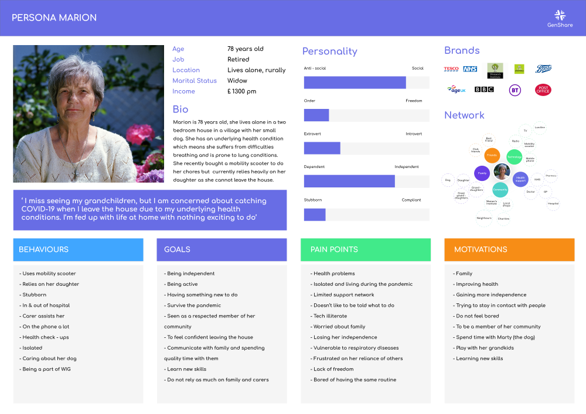
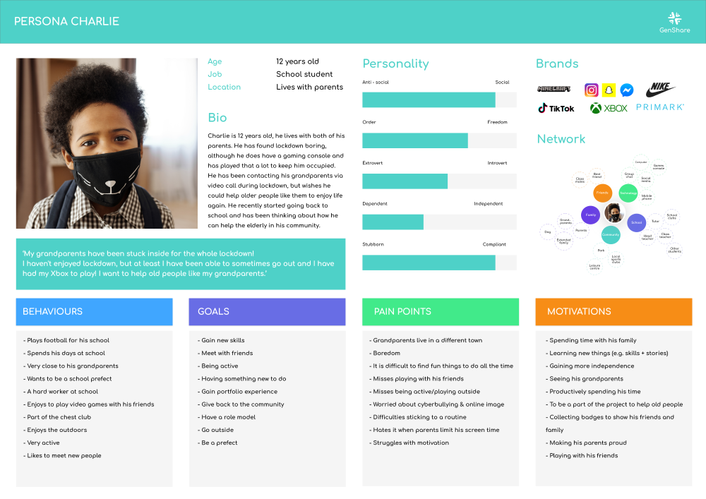
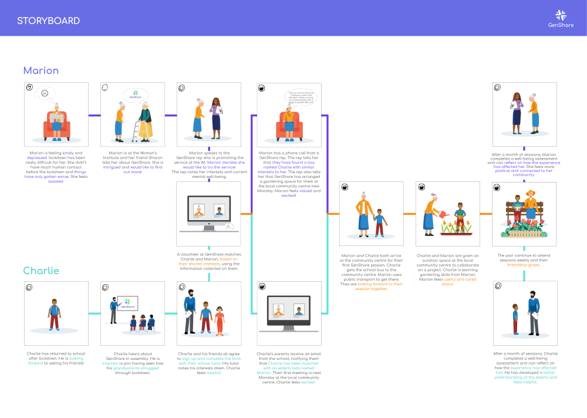
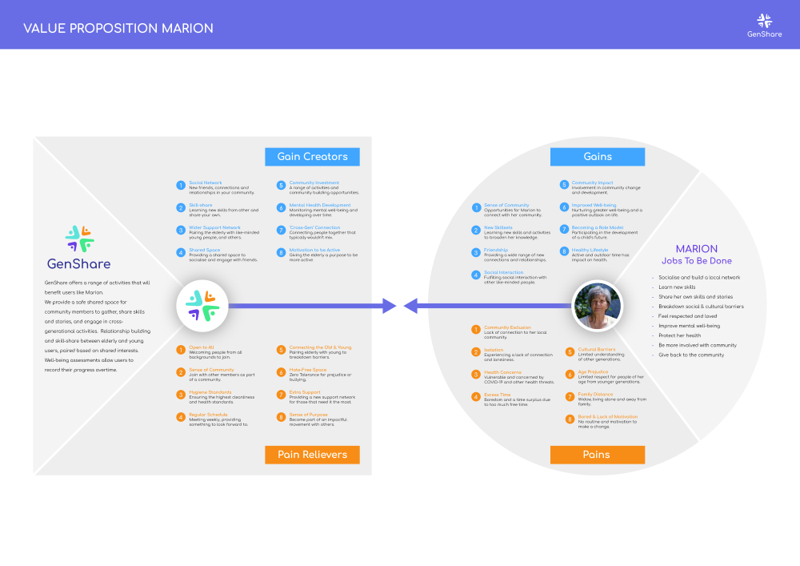
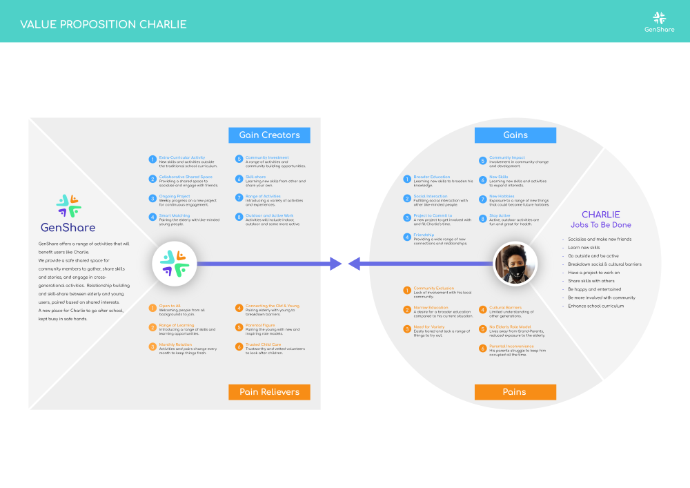
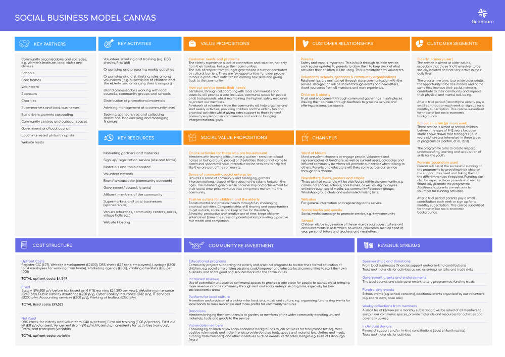
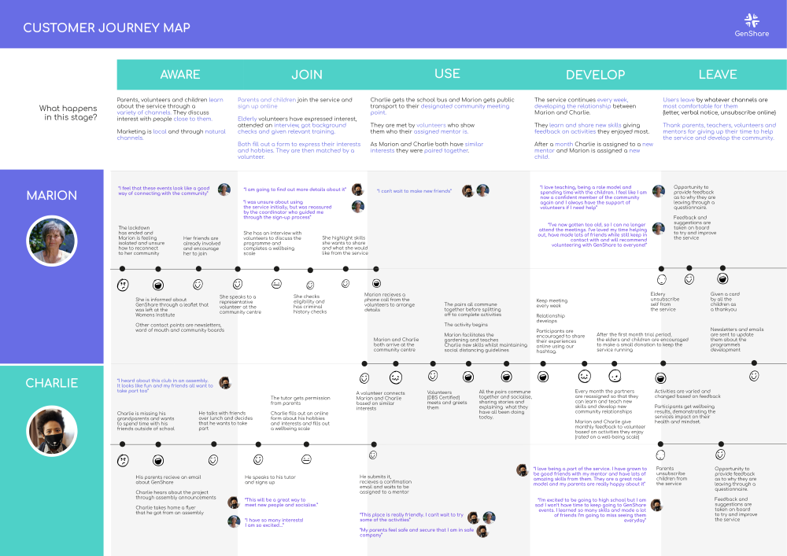
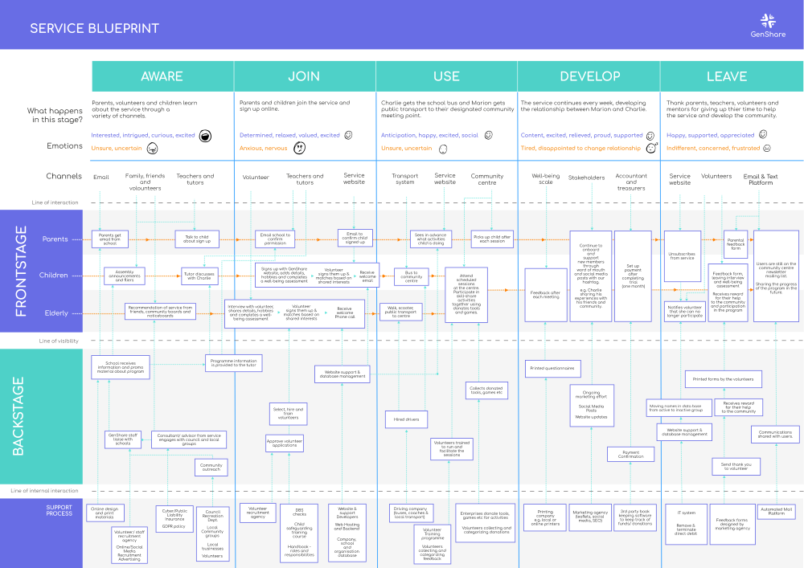
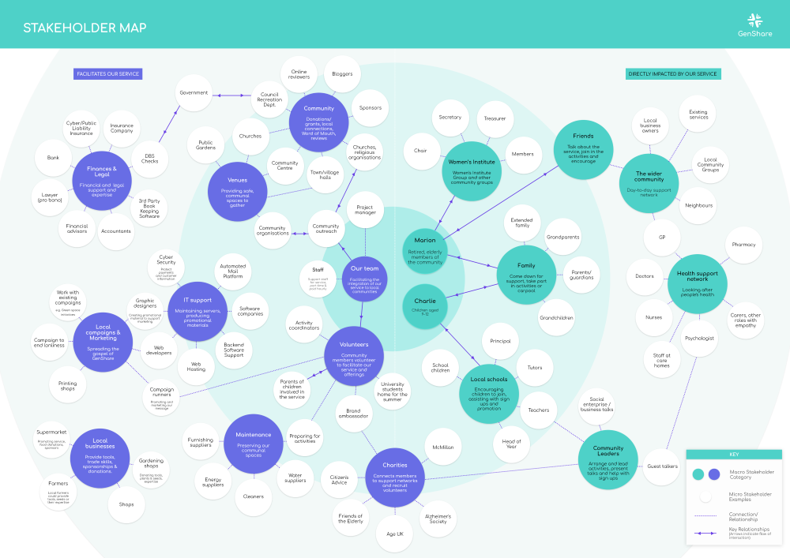

TLDR:
I worked on a 3 month research project. The project focused
on enabling the elderly and young children to take more
acitve roles within the community.
UX Design
Prototyping
Illustration
Graphics
Branding
Adobe Suite
Adobe XD
Service Design
Approach
The project followed the first half of double diamond model
(Discover and define). Emphasis was placed on the
research and discovery phase, to provide a service.
GenShare - bringing generations together through shared
experiences
Process
A range of different tools were used to frame the
behaviours, pains, motivations and goals of users. This
allowed us to identify the best opportunities to relieve
these pains and add value to users.


Defining behaviours, pains, motivations and goals of
users

Storyboarding to understand how users will become aware
and interact with the service


Using value proposition canvas to identify the best
opportunities to relieve pains and add value to users

The social business model canvas was used to define key
activities, relationships, segments and channels that
would be required to get the business running

Customer journey mapping was used to develop the stages
users will follow from discovering the service, through
to leaving it

A service blueprint was used to develop the channels and
support processes needed by the service

Stakeholder mapping was used to define who would
facilitate and who would be impacted by the service
Goals
The main goal of the project was to improve the lives of
elderly people following the Covid-19 pandemic. One of the
biggest challenges was conducting research with no direct
access to user. The data gathered related to primary data
collection
(books, personal sources, journals, newspapers,
websitess, government records).
Outcome
Below is the proposed service from the research project: